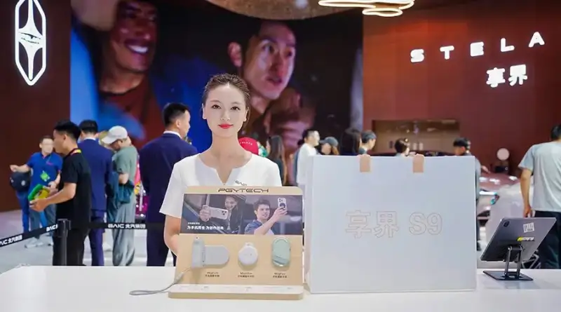
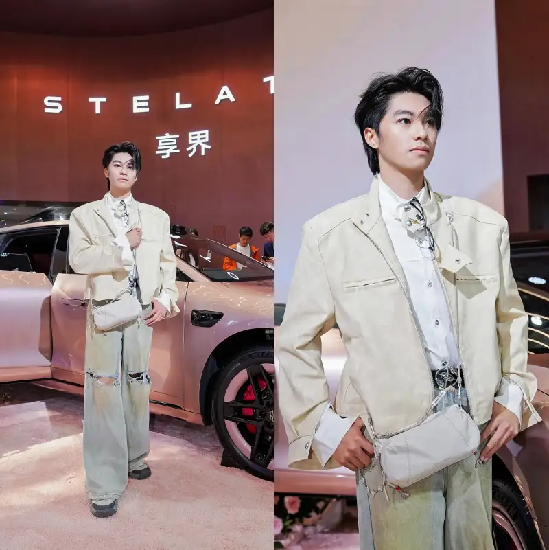
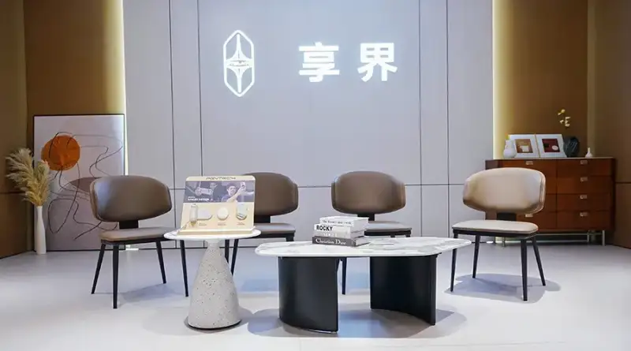
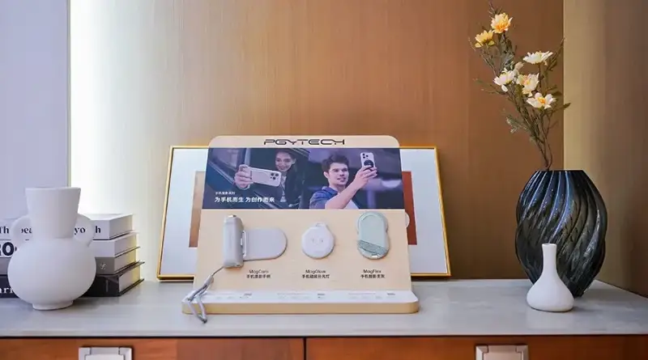

From April 24 to May 3, 2026, the Beijing International Automotive Exhibition opened in grand style. Stelato appeared prominently at the twin booths of BAIC Group and Huawei HIMA. The Stelato flagship 9 Series made a refreshed debut, expressing a new spring-summer travel style through a pink-and-white pairing of Star Rose Pink and Moon Velvet White. At the same time, the global photography lifestyle brand PGYTECH brought a range of good-looking camera gear to the BAIC Group Stelato booth. Together, the two showed a blend of scenes, from luxury mobility to everyday inspiration, and expanded the boundaries of new luxury living in the premium new-energy market.

Scenes blend: the moving cabin becomes a carrier for outdoor imaging inspiration
In the Stelato S9T display scene, the car body and the PGYTECH oneGo Pocket shoulder bag formed a pleasing pair, creating a mobile imaging workstation display zone.oThe oneGo Pocket shoulder bag uses a clean, smooth shape and a lightweight design. It covers the carry needs of both daily commuting and light creation. The bag has a three-layer split storage layout. A magnetic quick-access front pocket lets you reach the camera fast, while the middle and rear pockets hold a phone, power bank, and a tripod. The whole bag weighs only 260g, so travel stays light. This display shows the outdoor imaging lifestyle of urban creators: drive a car with style, bring light camera gear, and catch inspiration on the road at any time.

In the Stelato lounge, PGYTECH also showed its phone photography series, including the MagCam 2 phone grip, the MagGlow magnetic fill light, and the MagFlex phone tripod. The core strength of this system of creative gear is the deep teamwork of hardware and software. It gives phone photography a camera-like feel, and it connects seamlessly with the phone's native camera over Bluetooth. A custom dial controls focus, exposure, and ISO, with camera logic such as focus tracking and zoom. It is a seamless extension of in-car entertainment into outdoor vlogging, making shooting and lighting easy and graceful. Technology supports the journey, and imagery catches inspiration. Together they tell the full story of a premium travel lifestyle.

Online and offline: an immersive experience of a photography travel lifestyle
During the show, the two partners built an online-offline experience around a photography travel lifestyle. Online, Stelato and the official PGYTECH social channels cross-promoted, using video and posts to show how PGYTECH gear fits naturally into the travel scenes of the Stelato S9 Series. Offline, at the Stelato booth, PGYTECH products blended into the touchpoints of travel life, from storage aesthetics to the detail display in the VIP room. Visitors who stopped could feel how well professional imaging gear matches a luxury travel lifestyle.

An industry echo: making luxury mobility warmer through imagery
As Stelato defines a tech-luxury lifestyle, it focuses not only on car performance but also on the emotional experience and aesthetic expression of travel. This matches PGYTECH's brand idea of building a photography lifestyle. This partnership is not a simple product display. Through the Stelato S9 Series, a premium travel platform, it aims to pass on a life inspiration: let the vehicle become an extension of aesthetic expression, and let image creation become a natural instinct for exploring the world. Going forward, PGYTECH will keep supporting creators worldwide, making creation easier and giving every departure a sense of inspiration and ritual.
[About PGYTECH]
PGYTECH is a photography lifestyle brand that walks alongside creators worldwide. It focuses on the systematic development of camera lifestyle gear, covering camera bags and cases, tripods, phone accessories, and action-camera accessories, all of which fit into a creator's photographic life. Guided by functional aesthetics, and centered on innovation, quality, and smooth interaction, PGYTECH offers not only good-looking, high-quality gear but also a combination of aesthetics and innovative features, for a freer and more comfortable shooting experience. To date, it holds more than 200 patents and serves users in over 100 countries and regions. It keeps rethinking, and it wants to support creators as they explore more of what imagery can do, all to make creation easier.